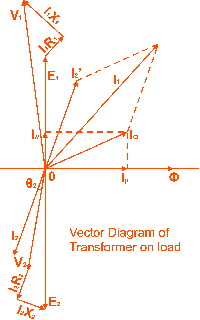
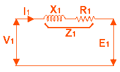
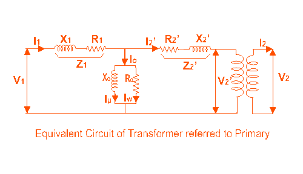
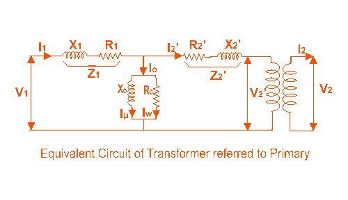
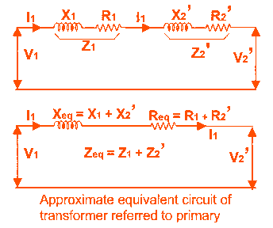
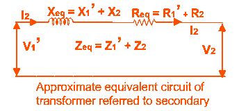

Equivalent Circuit of Transformer referred to Primary and Secondary
Equivalent CircuitReferred to Primary
Approximate Equivalent Circuit
Equivalent Circuit Referred to Secondary
Equivalent Circuit of Transformer
Equivalent impedance of transformer is essential to be calculated because the electrical power transformer is an electrical power system equipment for estimating different parameters of electrical power system which may be required to calculate total internal impedance of an electrical power transformer, viewing from primary side or secondary side as per requirement. This calculation requires equivalent circuit of transformer referred to primary or equivalent circuit of transformer referred to secondary sides respectively. Percentage impedance is also very essential parameter of transformer. Special attention is to be given to this parameter during installing a transformer in an existing electrical power system. Percentage impedance of different power transformers should be properly matched during parallel operation of power transformers. The percentage impedance can be derived from equivalent impedance of transformer so, it can be said that equivalent circuit of transformer is also required during calculation of % impedance.
Equivalent Circuit of Transformer Referred to Primary
For drawing equivalent circuit of transformer referred to primary, first we have to establish general equivalent circuit of transformer then, we will modify it for referring from primary side. For doing this, first we need to recall the complete vector diagram of a transformer which is shown in the figure below.

Let us consider the transformation ratio be,
In the figure right, the applied voltage to the primary is V1 and voltage across the primary winding is E1. Total electric current supplied to primary is I1. So the voltage V1 applied to the primary is partly dropped by I1Z1 or I1R1 + j.I1X1 before it appears across primary winding. The voltage appeared across winding is countered by primary induced emf E1. So voltage equation of this portion of the transformer can be written as,

The equivalent circuit for that equation can be drawn as below,

From the vector diagram above, it is found that the total primary electric current I1 has two components, one is no - load component Io and the other is load component I2′. As this primary electric current has two components or branches, so there must be a parallel path with primary winding of transformer. This parallel path of electric current is known as excitation branch of equivalent circuit of transformer. The resistive and reactive branches of the excitation circuit can be represented as

The load component I2′ flows through the primary winding of transformer and induced voltage across the winding is E1 as shown in the figure right. This induced voltage E1 transforms to secondary and it is E2 and load component of primary electric current I2′ is transformed to secondary as secondary electric current I2. Current of secondary is I2. So the voltage E2 across secondary winding is partly dropped by I2Z2 or I2R2 + j.I2X2 before it appears across load. The load voltage is V2.
The complete equivalent circuit of transformer is shown below.

Now if we see the voltage drop in secondary from primary side, then it would be ′K′ times greater and would be written as K.Z2.I2.
Again I2′.N1 = I2.N2
Therefore,
From above equation, secondary impedance of transformer referred to primary is,
So, the complete equivalent circuit of transformer referred to primary is shown in the figure below,

Approximate Equivalent Circuit of Transformer
Since Io is very small compared to I1, it is less than 5% of full load primary current, Io changes the voltage drop insignificantly. Hence, it is good approximation to ignore the excitation circuit in approximate equivalent circuit of transformer. The winding resistance and reactance being in series can now be combined into equivalent resistance and reactance of transformer, referred to any particular side. In this case it is side 1 or primary side.

Equivalent Circuit of Transformer Referred to Secondary
In similar way, approximate equivalent circuit of transformer referred to secondary can be drawn.
Where equivalent impedance of transformer referred to secondary, can be derived as

 by
by